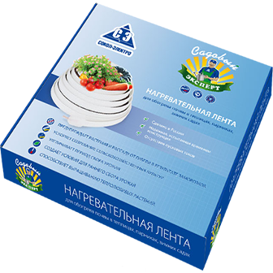

Нагревательная лента со встроенным терморегулятором (ЭНГЛ-1-ТК)

В её основе лежат восемь нагревательных жил из проволоки высокого сопротивления. Снаружи нагреватели покрыты водонепроницаемой оболочкой из силиконовой резины, из которой так же выполнены концевые опрессовки.
Нагревательная лента ЭНГЛ-1-ТК – представляет собой законченное изделие с низкотемпературными выводами и герметичными наконечниками. Лента выпускается фиксированных размеров и мощностей и не подлежит резке в размер. Монтаж изделия прост и не требует никаких специальных инструментов и навыков.
ЭНГЛ-1-ТК имеет встроенный терморегулятор, который автоматически поддерживает режим включения при +15°С и выключения при +20°С. Электронагревательная лента (ЭНГЛ-1-ТК) используется для обогрева почвы и (или) воздуха в теплицах, парниках, зимних садах с целью создания комфортных условий для выращивания растений.
- Предохраняет растения и рассаду от гибели в результате заморозков
- Ускоряет созревание сельскохозяйственных культур
- Увеличивает период сбора урожая
- Создаёт условия для раннего сбора урожая
- Способствует выращиванию теплолюбивых растений
- Позволяет увеличить количество и качество собираемого урожая
Монтаж
- Снять 35-40 сантиметров грунта;
- Выровнять поверхность;
- Засыпать песок слоем 3 сантиметра. Песок полить водой и утрамбовать;
- Уложить нагревательную ленту по длине в центр грядки. Ширина подогрева грядки на поверхности примерно 50-60 см. Расстояние между параллельно уложенными нагревательными лентами около 50 см.
- Поверх нагревательной ленты насыпать слой песка около 2 сантиметров и полить водой;
- Поверх слоя влажного песка, покрывающего кабель, поместить конец ленты со встроенным терморегулятором на распорку, которая обеспечивает оптимальное расстояние между датчиком и нагревательной лентой. Накрыть металлической сеткой с мелкими ячейками, чтобы защитить ленту и терморегулятор от механического воздействия;
- Насыпать плодородный грунт толщиной 35-40 сантиметров;
- Произвести установку устройства защитного отключения, подключить и провести тестирование системы.
Для обогрева воздуха в теплице закрепить ленты на боковых стенках.
- Сделано в России
- Простота монтажа и эксплуатации
- Надежная, испытанная временем конструкция
- Отсутствие пусковых токов
- Переход от нагревательного кабеля к простому токоподводящему (муфта) выполняется в заводских условиях, что обеспечивает высокую надежность изделия
- Большая площадь обогрева почвы
- Встроенный терморегулятор
Закажите обратный звонок
прямо сейчас!
Нагревательная лента со встроенным терморегулятором (ЭНГЛ-1-ТК)
Представляет собой плетеную ленту из стеклонити, в ее основе лежат восемь нагревательных жил из проволоки высокого сопротивления (нихром). Снаружи нагревательная лента покрыта водонепроницаемой оболочкой из силиконовой резины, из которой так же выполнены концевые опрессовки.
Электронагревательная лента ЭНГЛ-1-ТК – представляет собой законченное изделие с низкотемпературными выводами и герметичными наконечниками. Лента выпускается заводом различных фиксированных размеров и не подлежит резке в размер. Монтаж изделия прост и не требует никаких специальных инструментов и навыков.
ЭНГЛ-1-ТК имеет встроенный терморегулятор, который автоматически поддерживает режим вкл. При +3С° выкл. +при 13С°. Электронагревательная лента со встроенным терморегулятором ЭНГЛ-1-ТК предупреждают дорогостоящий ремонт вследствие замерзания и разрыва трубопроводов, расположенных в зоне замерзания. С помощью электронагревательных лент осуществляется подогрев, а при необходимости и размораживание трубопровода и запорной арматуры.
- Защита трубопроводов от разрыва в результате промерзания
- Защита (надо пробел поставить) кранов и вентилей, насосов от замерзания
- Форсированный обогрев (разогрев) трубопровода и (или) запорной арматуры при замерзании
- Прогрев дренажных труб
Монтаж
- Снять 35-40 сантиметров грунта;
- Выровнять поверхность;
- Засыпать песок слоем 3 сантиметра. Песок полить водой и утрамбовать;
- Уложить нагревательную ленту по длине в центр грядки. Ширина подогрева грядки на поверхности примерно 50-60 см. Расстояние между параллельно уложенными нагревательными лентами около 50 см.
- Поверх нагревательной ленты насыпать слой песка около 2 сантиметров и полить водой;
- Поверх слоя влажного песка, покрывающего кабель, поместить конец ленты со встроенным терморегулятором на распорку, которая обеспечивает оптимальное расстояние между датчиком и нагревательной лентой. Накрыть металлической сеткой с мелкими ячейками, чтобы защитить ленту и терморегулятор от механического воздействия;
- Насыпать плодородный грунт толщиной 35-40 сантиметров;
- Произвести установку устройства защитного отключения, подключить и провести тестирование системы.
- Сделано в России
- Надежная, испытанная временем конструкция
- Отсутствие пусковых токов
- Возможность холодного пуска
- Возможность форсированного обогрева
- Переход от нагревательного кабеля к простому токоподводящему (муфта) выполняется в заводских условиях, что обеспечивает высокую надежность
- Большая площадь контакта ленты с обогреваемым объектом, в сравнении с греющим кабелем
- Встроенный терморегулятор
Закажите обратный звонок
прямо сейчас!
Стеклоизолента термостойкая
Применяется при электротехнических работах для изоляции и ремонта электропроводки, автомобильных проводов, проводов питания электрических и индукционных печей, в саунах, проводов электродвигателей, переключателей и устройств управления печей и духовых шкафов, для крепления греющих кабелей. А так же для защиты и изоляции деталей, кабелей, подвергающихся высоким температурным нагрузкам, восстановления изоляционного покрытия в местах разделки изоляции и контактных соединений. Обладает высокой механической прочностью..
Стеклоизоляционная лента устойчива к воздействию температуры до 300°С.Обладает высокой влагостойкостью и прочностью на разрыв.
- Морозостойкость: -50С
- Термостойкость: +300С
- Напряжение пробоя: не менее 3000 В
- Высокая прочность на разрыв
- Высокая адгезия
- Размер: 0,1мм*15мм*10м